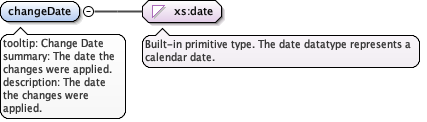

'$RCSfile: eml-dataset.xsd,v $' Copyright: 1997-2002 Regents of the University of California, University of New Mexico, and Arizona State University Sponsors: National Center for Ecological Analysis and Synthesis and Partnership for Interdisciplinary Studies of Coastal Oceans, University of California Santa Barbara Long-Term Ecological Research Network Office, University of New Mexico Center for Environmental Studies, Arizona State University Other funding: National Science Foundation (see README for details) The David and Lucile Packard Foundation For Details: http://knb.ecoinformatics.org/ '$Author: obrien $' '$Date: 2009-02-25 23:51:54 $' '$Revision: 1.59 $' This program is free software; you can redistribute it and/or modify it under the terms of the GNU General Public License as published by the Free Software Foundation; either version 2 of the License, or (at your option) any later version. This program is distributed in the hope that it will be useful, but WITHOUT ANY WARRANTY; without even the implied warranty of MERCHANTABILITY or FITNESS FOR A PARTICULAR PURPOSE. See the GNU General Public License for more details. You should have received a copy of the GNU General Public License along with this program; if not, write to the Free Software Foundation, Inc., 59 Temple Place, Suite 330, Boston, MA 02111-1307 USA
moduleName: eml-datasetmoduleDescription: The eml-dataset module - Dataset specific informationrecommendedUsage: all datasetsstandAlone: yes
tooltip: Purposesummary: A synopsis of the purpose of this dataset.description: A synopsis of the purpose of this dataset. It may include one or more paragraphs as well as inline links to table(s) and figure(s) that summarize the data included in the data paper, including a summary of key findings if appropriate. Note that this element requires DocBook style formatting. See eml-text for more information.
<xs:element name="purpose" type="txt:TextType" minOccurs="0"><xs:annotation><xs:documentation>tooltip: Purpose summary: A synopsis of the purpose of this dataset. description: A synopsis of the purpose of this dataset. It may include one or more paragraphs as well as inline links to table(s) and figure(s) that summarize the data included in the data paper, including a summary of key findings if appropriate. Note that this element requires DocBook style formatting. See eml-text for more information.</xs:documentation></xs:annotation></xs:element>
tooltip: Introductionsummary: An overview of the background and context for the dataset.description: One to many paragraphs that provide background and context for the dataset with appropriate figures and references. This is similar to the introduction for a journal article, and would include, for example, project objectives, hypotheses being addressed, what is known about the pattern or process under study, how the data have been used to date (including references), and how they could be used in the future. The introduction may include figure(s) and table(s) by first attaching those entities to the dataset (e.g., dataTable, otherEntity), providing an id attribute for that entity, and then referencing that entity id in the text of the introduction using Markdown's syntax for inline images. See eml-text for more information on formatting within this section.
<xs:element name="introduction" type="txt:TextType" minOccurs="0"><xs:annotation><xs:documentation>tooltip: Introduction summary: An overview of the background and context for the dataset. description: One to many paragraphs that provide background and context for the dataset with appropriate figures and references. This is similar to the introduction for a journal article, and would include, for example, project objectives, hypotheses being addressed, what is known about the pattern or process under study, how the data have been used to date (including references), and how they could be used in the future. The introduction may include figure(s) and table(s) by first attaching those entities to the dataset (e.g., dataTable, otherEntity), providing an id attribute for that entity, and then referencing that entity id in the text of the introduction using Markdown's syntax for inline images. See eml-text for more information on formatting within this section.</xs:documentation></xs:annotation></xs:element>
tooltip: Getting Startedsummary: A high level overview of interpretation, structure, and content of the dataset.description: One or more paragraphs that describe the overall interpretation, content and structure of the dataset. For example, the number and names of data files, they types of measurements that they contain, how those data files fit together in an overall design, and how they relate to the data collections methods, experimental design, and sampling design that are described in other EML sections. One might describe any specialized software that is available and/or may be necessary for analyzing or interpreting the data, and possibly include a high level description of data formats if they are unusual, keeping in mind that detailed desriptions of data structure and format are contained in the entity sections of EML. Citations, inline figures, and inline images can be included via inline references in Markdown sections. See eml-text for more information on formatting within this section.
<xs:element name="gettingStarted" type="txt:TextType" minOccurs="0"><xs:annotation><xs:documentation>tooltip: Getting Started summary: A high level overview of interpretation, structure, and content of the dataset. description: One or more paragraphs that describe the overall interpretation, content and structure of the dataset. For example, the number and names of data files, they types of measurements that they contain, how those data files fit together in an overall design, and how they relate to the data collections methods, experimental design, and sampling design that are described in other EML sections. One might describe any specialized software that is available and/or may be necessary for analyzing or interpreting the data, and possibly include a high level description of data formats if they are unusual, keeping in mind that detailed desriptions of data structure and format are contained in the entity sections of EML. Citations, inline figures, and inline images can be included via inline references in Markdown sections. See eml-text for more information on formatting within this section.</xs:documentation></xs:annotation></xs:element>
tooltip: Acknowledgementssummary: Text that acknowledges funders and other key contributors.description: One or more sentences that acknowledge funders and other key contributors to the study (excluding the dataset authors listed in the creator field). Note that funding awards are also listed by award number in the eml-project award element, which provides a structured list of funders, award numbers, and award URIs for the dataset. When displaying acknowledgements, client software should provide both the information in this acknowledgements element as well as links from the award element. See eml-text for more information on formatting within this section.
<xs:element name="acknowledgements" type="txt:TextType" minOccurs="0"><xs:annotation><xs:documentation>tooltip: Acknowledgements summary: Text that acknowledges funders and other key contributors. description: One or more sentences that acknowledge funders and other key contributors to the study (excluding the dataset authors listed in the creator field). Note that funding awards are also listed by award number in the eml-project award element, which provides a structured list of funders, award numbers, and award URIs for the dataset. When displaying acknowledgements, client software should provide both the information in this acknowledgements element as well as links from the award element. See eml-text for more information on formatting within this section.</xs:documentation></xs:annotation></xs:element>
tooltip: Maintenancesummary: A description of the maintenance of this data resource.description: A description of the maintenance of this data resource. This includes information about the frequency of update, and whether there is ongoing data collection.
<xs:element name="maintenance" type="MaintenanceType" minOccurs="0"><xs:annotation><xs:documentation>tooltip: Maintenance summary: A description of the maintenance of this data resource. description: A description of the maintenance of this data resource. This includes information about the frequency of update, and whether there is ongoing data collection.</xs:documentation></xs:annotation></xs:element>
tooltip: Maintenance Descriptionsummary: A text description of the maintenance of this data resource.description: A text description of the maintenance of this data resource. Note that this field must be marked up using DocBook like tagging. See eml-text for more information.
<xs:element name="description" type="txt:TextType"><xs:annotation><xs:documentation>tooltip: Maintenance Description summary: A text description of the maintenance of this data resource. description: A text description of the maintenance of this data resource. Note that this field must be marked up using DocBook like tagging. See eml-text for more information.</xs:documentation></xs:annotation></xs:element>
tooltip: Maintenance Update Frequencysummary: Frequency with which changes and additions are made to the dataset after the initial dataset is completed.description: Frequency with which changes and additions are made to the dataset after the initial dataset is completed. The values for this field must come from the enumeration MaintUpFreqType.
<xs:element name="maintenanceUpdateFrequency" type="MaintUpFreqType" minOccurs="0"><xs:annotation><xs:documentation>tooltip: Maintenance Update Frequency summary: Frequency with which changes and additions are made to the dataset after the initial dataset is completed. description: Frequency with which changes and additions are made to the dataset after the initial dataset is completed. The values for this field must come from the enumeration MaintUpFreqType.</xs:documentation></xs:annotation></xs:element>
tooltip: Change Historysummary: A description of changes made to the data since its release.description: A description of changes made to the data since its release.
<xs:element name="changeHistory" minOccurs="0" maxOccurs="unbounded"><xs:annotation><xs:documentation>tooltip: Change History summary: A description of changes made to the data since its release. description: A description of changes made to the data since its release.</xs:documentation></xs:annotation><xs:complexType><xs:sequence><xs:element name="changeScope" type="res:NonEmptyStringType"><xs:annotation><xs:documentation>tooltip: Change Scope summary: An expression describing the scope to which the documented change was applied. description: The expression should unambiguously identify the entity(s) and attribute(s) that were changed.</xs:documentation></xs:annotation></xs:element><xs:element name="oldValue" type="res:NonEmptyStringType"><xs:annotation><xs:documentation>tooltip: Old Value summary: The previous value of the data prior to the change. description: The previous value or an expression that describes the previous value of the data.</xs:documentation></xs:annotation></xs:element><xs:element name="changeDate" type="xs:date"><xs:annotation><xs:documentation>tooltip: Change Date summary: The date the changes were applied. description: The date the changes were applied.</xs:documentation></xs:annotation></xs:element><xs:element name="comment" type="res:NonEmptyStringType" minOccurs="0"><xs:annotation><xs:documentation>tooltip: Comment summary: Explanation or justification for the change made to the data. description: Explanation or justification for the change made to the data.</xs:documentation></xs:annotation></xs:element></xs:sequence></xs:complexType></xs:element>
tooltip: Change Scopesummary: An expression describing the scope to which the documented change was applied.description: The expression should unambiguously identify the entity(s) and attribute(s) that were changed.
<xs:element name="changeScope" type="res:NonEmptyStringType"><xs:annotation><xs:documentation>tooltip: Change Scope summary: An expression describing the scope to which the documented change was applied. description: The expression should unambiguously identify the entity(s) and attribute(s) that were changed.</xs:documentation></xs:annotation></xs:element>
tooltip: Old Valuesummary: The previous value of the data prior to the change.description: The previous value or an expression that describes the previous value of the data.
<xs:element name="oldValue" type="res:NonEmptyStringType"><xs:annotation><xs:documentation>tooltip: Old Value summary: The previous value of the data prior to the change. description: The previous value or an expression that describes the previous value of the data.</xs:documentation></xs:annotation></xs:element>
tooltip: Change Datesummary: The date the changes were applied.description: The date the changes were applied.
Diagram

Type
xs:date
Properties
content
simple
Source
<xs:element name="changeDate" type="xs:date"><xs:annotation><xs:documentation>tooltip: Change Date summary: The date the changes were applied. description: The date the changes were applied.</xs:documentation></xs:annotation></xs:element>
tooltip: Commentsummary: Explanation or justification for the change made to the data.description: Explanation or justification for the change made to the data.
<xs:element name="comment" type="res:NonEmptyStringType" minOccurs="0"><xs:annotation><xs:documentation>tooltip: Comment summary: Explanation or justification for the change made to the data. description: Explanation or justification for the change made to the data.</xs:documentation></xs:annotation></xs:element>
tooltip: Contactsummary: The contact for this datasetdescription: The contact field contains contact information for this dataset. This is the person or institution to contact with questions about the use, interpretation of a data set.
<xs:element name="contact" type="rp:ResponsibleParty" maxOccurs="unbounded"><xs:annotation><xs:documentation>tooltip: Contact summary: The contact for this dataset description: The contact field contains contact information for this dataset. This is the person or institution to contact with questions about the use, interpretation of a data set.</xs:documentation></xs:annotation></xs:element>
tooltip: Data Set Publishersummary: The publisher of this data setdescription: The publisher of this data set. At times this is a traditional publishing house, but it may also simply be an institution that is making the data available in a published (ie, citable) format.
<xs:element name="publisher" type="rp:ResponsibleParty" minOccurs="0"><xs:annotation><xs:documentation>tooltip: Data Set Publisher summary: The publisher of this data set description: The publisher of this data set. At times this is a traditional publishing house, but it may also simply be an institution that is making the data available in a published (ie, citable) format.</xs:documentation></xs:annotation></xs:element>
tooltip: Publication placesummary: The location that the resource was published.description: The pubPlace field is the location where the resource was published, which may be different from where the resource was created.example: San Francisco, CA, USAexample: New York, NY, USA
<xs:element name="pubPlace" type="res:NonEmptyStringType" minOccurs="0"><xs:annotation><xs:documentation>tooltip: Publication place summary: The location that the resource was published. description: The pubPlace field is the location where the resource was published, which may be different from where the resource was created. example: San Francisco, CA, USA example: New York, NY, USA</xs:documentation></xs:annotation></xs:element>
tooltip: methodssummary: The methods field documents scientific methods used in the collection of this dataset.description: The methods field documents scientific methods used in the collection of this dataset. It includes information on items such as tools, instrument calibration and software.
<xs:element name="methods" type="md:MethodsType" minOccurs="0"><xs:annotation><xs:documentation>tooltip: methods summary: The methods field documents scientific methods used in the collection of this dataset. description: The methods field documents scientific methods used in the collection of this dataset. It includes information on items such as tools, instrument calibration and software.</xs:documentation></xs:annotation></xs:element>
tooltip: projectsummary: The project field contains information on the project in which this dataset was collected.description: The project field contains information on the project in which this dataset was collected. It includes information such as project personnel, funding, study area, project design and related projects. The project description can also contain documentation on subprojects.
<xs:element name="project" type="proj:ResearchProjectType" minOccurs="0"><xs:annotation><xs:documentation>tooltip: project summary: The project field contains information on the project in which this dataset was collected. description: The project field contains information on the project in which this dataset was collected. It includes information such as project personnel, funding, study area, project design and related projects. The project description can also contain documentation on subprojects.</xs:documentation></xs:annotation></xs:element>
tooltip: data tablesummary: The dataTable field documents the dataTable(s) that make up this dataset.description: The dataTable field documents the dataTable(s) that make up this dataset. A dataTable could be anything from a Comma Separated Value (CSV) file to a spreadsheet to a table in an RDBMS.
<xs:element name="dataTable" type="dat:DataTableType"><xs:annotation><xs:documentation>tooltip: data table summary: The dataTable field documents the dataTable(s) that make up this dataset. description: The dataTable field documents the dataTable(s) that make up this dataset. A dataTable could be anything from a Comma Separated Value (CSV) file to a spreadsheet to a table in an RDBMS.</xs:documentation></xs:annotation></xs:element>
tooltip: spatial rastersummary: The spatialRaster field describes any spatial raster images included in this dataset.description: The spatialRaster field describes any spatial raster images included in this dataset.
<xs:element name="spatialRaster" type="sr:SpatialRasterType"><xs:annotation><xs:documentation>tooltip: spatial raster summary: The spatialRaster field describes any spatial raster images included in this dataset. description: The spatialRaster field describes any spatial raster images included in this dataset.</xs:documentation></xs:annotation></xs:element>
tooltip: spatial vectorsummary: The spatialVector field describes any spatial vectors included in this dataset.description: The spatialVector field describes any spatial vectors included in this dataset.
<xs:element name="spatialVector" type="sv:SpatialVectorType"><xs:annotation><xs:documentation>tooltip: spatial vector summary: The spatialVector field describes any spatial vectors included in this dataset. description: The spatialVector field describes any spatial vectors included in this dataset.</xs:documentation></xs:annotation></xs:element>
tooltip: stored proceduresummary: The storedProcedure field contains information about any stored procedures included with this dataset.description: The storedProcedure field contains information about any stored procedures included with this dataset. This usually implies that the dataset is stored in a DBMS or some other data management system capable of processing your dataset.
<xs:element name="storedProcedure" type="sp:StoredProcedureType"><xs:annotation><xs:documentation>tooltip: stored procedure summary: The storedProcedure field contains information about any stored procedures included with this dataset. description: The storedProcedure field contains information about any stored procedures included with this dataset. This usually implies that the dataset is stored in a DBMS or some other data management system capable of processing your dataset.</xs:documentation></xs:annotation></xs:element>
tooltip: viewsummary: The view field contains information about any views included with this dataset.description: The view field contains information about any view included with this dataset. This usually implies that the dataset is stored in a DBMS or some other data management system capable of processing your dataset.
<xs:element name="view" type="v:ViewType"><xs:annotation><xs:documentation>tooltip: view summary: The view field contains information about any views included with this dataset. description: The view field contains information about any view included with this dataset. This usually implies that the dataset is stored in a DBMS or some other data management system capable of processing your dataset.</xs:documentation></xs:annotation></xs:element>
tooltip: other entitysummary: The otherEntity field contains information about any entity in the dataset that is not any of the preceding entities.description: The otherEntity field contains information about any entity in the dataset that is not any of the preceding entities. (i.e. it is not a table, spatialRaster, spatialVector, storedProcedure or view.) OtherEntity allows the documentation of basic entity fields as well as a plain text field to allow you to type your entity.
<xs:element name="otherEntity" type="ent:OtherEntityType"><xs:annotation><xs:documentation>tooltip: other entity summary: The otherEntity field contains information about any entity in the dataset that is not any of the preceding entities. description: The otherEntity field contains information about any entity in the dataset that is not any of the preceding entities. (i.e. it is not a table, spatialRaster, spatialVector, storedProcedure or view.) OtherEntity allows the documentation of basic entity fields as well as a plain text field to allow you to type your entity.</xs:documentation></xs:annotation></xs:element>
tooltip: Reference Publicationsummary: A citation to an additional publication that serves as an important reference for a dataset.description: A citation to an additional publication that serves as an important reference for a dataset. People using this dataset should generally cite the dataset itself (using the creator, pubDate, title, publisher, and packageId fields), and consider providing an additional citation to the Reference Publication. Common cases where a Reference Publication may be useful include when a data paper is published that describes the dataset, or when a paper is intended to be the canonical or examplar reference to the dataset.
<xs:element name="referencePublication" type="cit:CitationType" minOccurs="0" maxOccurs="1"><xs:annotation><xs:documentation>tooltip: Reference Publication summary: A citation to an additional publication that serves as an important reference for a dataset. description: A citation to an additional publication that serves as an important reference for a dataset. People using this dataset should generally cite the dataset itself (using the creator, pubDate, title, publisher, and packageId fields), and consider providing an additional citation to the Reference Publication. Common cases where a Reference Publication may be useful include when a data paper is published that describes the dataset, or when a paper is intended to be the canonical or examplar reference to the dataset.</xs:documentation></xs:annotation></xs:element>
tooltip: Usage Citationsummary: A citation to articles or products in which the dataset is used or referenced.description: A citation to articles or products in which the dataset is used or referenced. The citation element contains general information about a literature resource that has used or references this dataset resource. It is not expected that the list of usageCitations will necessarily be complete, but rather they serve as examples and pointers to scholarly works in which this dataset has been used.
<xs:element name="usageCitation" type="cit:CitationType" minOccurs="0" maxOccurs="unbounded"><xs:annotation><xs:documentation>tooltip: Usage Citation summary: A citation to articles or products in which the dataset is used or referenced. description: A citation to articles or products in which the dataset is used or referenced. The citation element contains general information about a literature resource that has used or references this dataset resource. It is not expected that the list of usageCitations will necessarily be complete, but rather they serve as examples and pointers to scholarly works in which this dataset has been used.</xs:documentation></xs:annotation></xs:element>
tooltip: Literature Citedsummary: A citation to articles or products which were referenced in the dataset or its associated metadata.description: A citation to articles or products which were referenced in the dataset or its associated metadata. The list represents the bibliography of works related to the dataset, whether for reference, comparison, or others purposes.
<xs:element name="literatureCited" type="cit:CitationListType" minOccurs="0" maxOccurs="unbounded"><xs:annotation><xs:documentation>tooltip: Literature Cited summary: A citation to articles or products which were referenced in the dataset or its associated metadata. description: A citation to articles or products which were referenced in the dataset or its associated metadata. The list represents the bibliography of works related to the dataset, whether for reference, comparison, or others purposes.</xs:documentation></xs:annotation></xs:element>
Element dataset
Namespace
https://eml.ecoinformatics.org/dataset-2.2.0
Annotations
tooltip: Dataset Descriptorssummary: The dataset field encompasses all information about a single dataset.description: The dataset field encompasses all information about a single dataset. A dataset is defined as all of the information describing a data collection event. This event may take place over some period of time and include many actual collections (a time series or remote sensing application) or it could be just one actual collection (a day in the field).
<xs:element name="dataset" type="DatasetType"><xs:annotation><xs:documentation>tooltip: Dataset Descriptors summary: The dataset field encompasses all information about a single dataset. description: The dataset field encompasses all information about a single dataset. A dataset is defined as all of the information describing a data collection event. This event may take place over some period of time and include many actual collections (a time series or remote sensing application) or it could be just one actual collection (a day in the field).</xs:documentation></xs:annotation></xs:element>
Complex Type DatasetType
Namespace
https://eml.ecoinformatics.org/dataset-2.2.0
Annotations
tooltip: Datasetsummary: DatasetType is the base type for the dataset element.description: DatasetType is the base type for the dataset element. The dataset field encompasses all information about a single dataset. A dataset is defined as all of the information describing a data collection event. This event may take place over some period of time and include many actual collections (a time series or remote sensing application) or it could be just one actual collection (a day in the field).
<xs:complexType name="DatasetType"><xs:annotation><xs:documentation>tooltip: Dataset summary: DatasetType is the base type for the dataset element. description: DatasetType is the base type for the dataset element. The dataset field encompasses all information about a single dataset. A dataset is defined as all of the information describing a data collection event. This event may take place over some period of time and include many actual collections (a time series or remote sensing application) or it could be just one actual collection (a day in the field).</xs:documentation></xs:annotation><xs:choice><xs:sequence><xs:group ref="res:ResourceGroup"/><xs:element name="purpose" type="txt:TextType" minOccurs="0"><xs:annotation><xs:documentation>tooltip: Purpose summary: A synopsis of the purpose of this dataset. description: A synopsis of the purpose of this dataset. It may include one or more paragraphs as well as inline links to table(s) and figure(s) that summarize the data included in the data paper, including a summary of key findings if appropriate. Note that this element requires DocBook style formatting. See eml-text for more information.</xs:documentation></xs:annotation></xs:element><xs:element name="introduction" type="txt:TextType" minOccurs="0"><xs:annotation><xs:documentation>tooltip: Introduction summary: An overview of the background and context for the dataset. description: One to many paragraphs that provide background and context for the dataset with appropriate figures and references. This is similar to the introduction for a journal article, and would include, for example, project objectives, hypotheses being addressed, what is known about the pattern or process under study, how the data have been used to date (including references), and how they could be used in the future. The introduction may include figure(s) and table(s) by first attaching those entities to the dataset (e.g., dataTable, otherEntity), providing an id attribute for that entity, and then referencing that entity id in the text of the introduction using Markdown's syntax for inline images. See eml-text for more information on formatting within this section.</xs:documentation></xs:annotation></xs:element><xs:element name="gettingStarted" type="txt:TextType" minOccurs="0"><xs:annotation><xs:documentation>tooltip: Getting Started summary: A high level overview of interpretation, structure, and content of the dataset. description: One or more paragraphs that describe the overall interpretation, content and structure of the dataset. For example, the number and names of data files, they types of measurements that they contain, how those data files fit together in an overall design, and how they relate to the data collections methods, experimental design, and sampling design that are described in other EML sections. One might describe any specialized software that is available and/or may be necessary for analyzing or interpreting the data, and possibly include a high level description of data formats if they are unusual, keeping in mind that detailed desriptions of data structure and format are contained in the entity sections of EML. Citations, inline figures, and inline images can be included via inline references in Markdown sections. See eml-text for more information on formatting within this section.</xs:documentation></xs:annotation></xs:element><xs:element name="acknowledgements" type="txt:TextType" minOccurs="0"><xs:annotation><xs:documentation>tooltip: Acknowledgements summary: Text that acknowledges funders and other key contributors. description: One or more sentences that acknowledge funders and other key contributors to the study (excluding the dataset authors listed in the creator field). Note that funding awards are also listed by award number in the eml-project award element, which provides a structured list of funders, award numbers, and award URIs for the dataset. When displaying acknowledgements, client software should provide both the information in this acknowledgements element as well as links from the award element. See eml-text for more information on formatting within this section.</xs:documentation></xs:annotation></xs:element><xs:element name="maintenance" type="MaintenanceType" minOccurs="0"><xs:annotation><xs:documentation>tooltip: Maintenance summary: A description of the maintenance of this data resource. description: A description of the maintenance of this data resource. This includes information about the frequency of update, and whether there is ongoing data collection.</xs:documentation></xs:annotation></xs:element><xs:element name="contact" type="rp:ResponsibleParty" maxOccurs="unbounded"><xs:annotation><xs:documentation>tooltip: Contact summary: The contact for this dataset description: The contact field contains contact information for this dataset. This is the person or institution to contact with questions about the use, interpretation of a data set.</xs:documentation></xs:annotation></xs:element><xs:element name="publisher" type="rp:ResponsibleParty" minOccurs="0"><xs:annotation><xs:documentation>tooltip: Data Set Publisher summary: The publisher of this data set description: The publisher of this data set. At times this is a traditional publishing house, but it may also simply be an institution that is making the data available in a published (ie, citable) format.</xs:documentation></xs:annotation></xs:element><xs:element name="pubPlace" type="res:NonEmptyStringType" minOccurs="0"><xs:annotation><xs:documentation>tooltip: Publication place summary: The location that the resource was published. description: The pubPlace field is the location where the resource was published, which may be different from where the resource was created. example: San Francisco, CA, USA example: New York, NY, USA</xs:documentation></xs:annotation></xs:element><xs:element name="methods" type="md:MethodsType" minOccurs="0"><xs:annotation><xs:documentation>tooltip: methods summary: The methods field documents scientific methods used in the collection of this dataset. description: The methods field documents scientific methods used in the collection of this dataset. It includes information on items such as tools, instrument calibration and software.</xs:documentation></xs:annotation></xs:element><xs:element name="project" type="proj:ResearchProjectType" minOccurs="0"><xs:annotation><xs:documentation>tooltip: project summary: The project field contains information on the project in which this dataset was collected. description: The project field contains information on the project in which this dataset was collected. It includes information such as project personnel, funding, study area, project design and related projects. The project description can also contain documentation on subprojects.</xs:documentation></xs:annotation></xs:element><xs:choice minOccurs="0" maxOccurs="unbounded"><xs:element name="dataTable" type="dat:DataTableType"><xs:annotation><xs:documentation>tooltip: data table summary: The dataTable field documents the dataTable(s) that make up this dataset. description: The dataTable field documents the dataTable(s) that make up this dataset. A dataTable could be anything from a Comma Separated Value (CSV) file to a spreadsheet to a table in an RDBMS.</xs:documentation></xs:annotation></xs:element><xs:element name="spatialRaster" type="sr:SpatialRasterType"><xs:annotation><xs:documentation>tooltip: spatial raster summary: The spatialRaster field describes any spatial raster images included in this dataset. description: The spatialRaster field describes any spatial raster images included in this dataset.</xs:documentation></xs:annotation></xs:element><xs:element name="spatialVector" type="sv:SpatialVectorType"><xs:annotation><xs:documentation>tooltip: spatial vector summary: The spatialVector field describes any spatial vectors included in this dataset. description: The spatialVector field describes any spatial vectors included in this dataset.</xs:documentation></xs:annotation></xs:element><xs:element name="storedProcedure" type="sp:StoredProcedureType"><xs:annotation><xs:documentation>tooltip: stored procedure summary: The storedProcedure field contains information about any stored procedures included with this dataset. description: The storedProcedure field contains information about any stored procedures included with this dataset. This usually implies that the dataset is stored in a DBMS or some other data management system capable of processing your dataset.</xs:documentation></xs:annotation></xs:element><xs:element name="view" type="v:ViewType"><xs:annotation><xs:documentation>tooltip: view summary: The view field contains information about any views included with this dataset. description: The view field contains information about any view included with this dataset. This usually implies that the dataset is stored in a DBMS or some other data management system capable of processing your dataset.</xs:documentation></xs:annotation></xs:element><xs:element name="otherEntity" type="ent:OtherEntityType"><xs:annotation><xs:documentation>tooltip: other entity summary: The otherEntity field contains information about any entity in the dataset that is not any of the preceding entities. description: The otherEntity field contains information about any entity in the dataset that is not any of the preceding entities. (i.e. it is not a table, spatialRaster, spatialVector, storedProcedure or view.) OtherEntity allows the documentation of basic entity fields as well as a plain text field to allow you to type your entity.</xs:documentation></xs:annotation></xs:element></xs:choice><xs:element name="referencePublication" type="cit:CitationType" minOccurs="0" maxOccurs="1"><xs:annotation><xs:documentation>tooltip: Reference Publication summary: A citation to an additional publication that serves as an important reference for a dataset. description: A citation to an additional publication that serves as an important reference for a dataset. People using this dataset should generally cite the dataset itself (using the creator, pubDate, title, publisher, and packageId fields), and consider providing an additional citation to the Reference Publication. Common cases where a Reference Publication may be useful include when a data paper is published that describes the dataset, or when a paper is intended to be the canonical or examplar reference to the dataset.</xs:documentation></xs:annotation></xs:element><xs:element name="usageCitation" type="cit:CitationType" minOccurs="0" maxOccurs="unbounded"><xs:annotation><xs:documentation>tooltip: Usage Citation summary: A citation to articles or products in which the dataset is used or referenced. description: A citation to articles or products in which the dataset is used or referenced. The citation element contains general information about a literature resource that has used or references this dataset resource. It is not expected that the list of usageCitations will necessarily be complete, but rather they serve as examples and pointers to scholarly works in which this dataset has been used.</xs:documentation></xs:annotation></xs:element><xs:element name="literatureCited" type="cit:CitationListType" minOccurs="0" maxOccurs="unbounded"><xs:annotation><xs:documentation>tooltip: Literature Cited summary: A citation to articles or products which were referenced in the dataset or its associated metadata. description: A citation to articles or products which were referenced in the dataset or its associated metadata. The list represents the bibliography of works related to the dataset, whether for reference, comparison, or others purposes.</xs:documentation></xs:annotation></xs:element></xs:sequence><xs:group ref="res:ReferencesGroup"/></xs:choice><xs:attribute name="id" type="res:IDType" use="optional"/><xs:attribute name="system" type="res:SystemType" use="optional"/><xs:attribute name="scope" type="res:ScopeType" use="optional" default="document"/></xs:complexType>
Complex Type MaintenanceType
Namespace
https://eml.ecoinformatics.org/dataset-2.2.0
Annotations
tooltip: Maintenance Typesummary: The maintenance type defines the fields for the maintenance element. It encompasses all information related to the maintenance and upkeep of this dataset.description: The maintenance type defines the fields for the maintenance element.
<xs:complexType name="MaintenanceType"><xs:annotation><xs:documentation>tooltip: Maintenance Type summary: The maintenance type defines the fields for the maintenance element. It encompasses all information related to the maintenance and upkeep of this dataset. description: The maintenance type defines the fields for the maintenance element.</xs:documentation></xs:annotation><xs:sequence><xs:element name="description" type="txt:TextType"><xs:annotation><xs:documentation>tooltip: Maintenance Description summary: A text description of the maintenance of this data resource. description: A text description of the maintenance of this data resource. Note that this field must be marked up using DocBook like tagging. See eml-text for more information.</xs:documentation></xs:annotation></xs:element><xs:element name="maintenanceUpdateFrequency" type="MaintUpFreqType" minOccurs="0"><xs:annotation><xs:documentation>tooltip: Maintenance Update Frequency summary: Frequency with which changes and additions are made to the dataset after the initial dataset is completed. description: Frequency with which changes and additions are made to the dataset after the initial dataset is completed. The values for this field must come from the enumeration MaintUpFreqType.</xs:documentation></xs:annotation></xs:element><xs:element name="changeHistory" minOccurs="0" maxOccurs="unbounded"><xs:annotation><xs:documentation>tooltip: Change History summary: A description of changes made to the data since its release. description: A description of changes made to the data since its release.</xs:documentation></xs:annotation><xs:complexType><xs:sequence><xs:element name="changeScope" type="res:NonEmptyStringType"><xs:annotation><xs:documentation>tooltip: Change Scope summary: An expression describing the scope to which the documented change was applied. description: The expression should unambiguously identify the entity(s) and attribute(s) that were changed.</xs:documentation></xs:annotation></xs:element><xs:element name="oldValue" type="res:NonEmptyStringType"><xs:annotation><xs:documentation>tooltip: Old Value summary: The previous value of the data prior to the change. description: The previous value or an expression that describes the previous value of the data.</xs:documentation></xs:annotation></xs:element><xs:element name="changeDate" type="xs:date"><xs:annotation><xs:documentation>tooltip: Change Date summary: The date the changes were applied. description: The date the changes were applied.</xs:documentation></xs:annotation></xs:element><xs:element name="comment" type="res:NonEmptyStringType" minOccurs="0"><xs:annotation><xs:documentation>tooltip: Comment summary: Explanation or justification for the change made to the data. description: Explanation or justification for the change made to the data.</xs:documentation></xs:annotation></xs:element></xs:sequence></xs:complexType></xs:element></xs:sequence></xs:complexType>